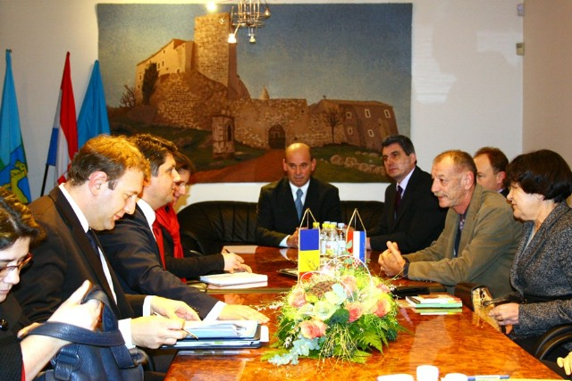

 U srijedu je Općinu Kršan posjetio ministar vanjskih poslova Rumunjske Titus Corlățean. U općinskom središtu, zajedno sa županijskim i općinskim čelnicima razgovarao je o zaštiti vlaškog jezika, kao i o obnovi školske zgrade u Šušnjevici. O navedenoj temi istog dana u Zagrebu je, prije dolaska u Kršan, razgovarao s predsjednikom RH Ivom Josipovićem i ministricom vanjskih poslova Vesnom Pusić.
Ministar je kazao, kako postoji poseban most koji spaja Hrvatsku i Rumunjsku, a to je kulturološki most. Rekao je i kako u Rumunjskoj već dugo živi važna hrvatska manjina, osobito u jugozapadnom dijelu, u Banatu, a najviše pripadnika te manjine živi u Karašovi, te imaju i predstavnika u Parlamentu. U Rumunjskoj je jaka njihova kulturna aktivnost, što je za Rumunjsku važno, jer je važno da se očuva to kulturno nasljedstvo. Nadalje navodi kako u Hrvatskoj postoji nešto posebno – mala zajednica koja govori veoma dragocjen jezik, koji se naziva vlaškim jezikom, a znanstveni termin je istrorumunjski. On predstavlja jedan od pet dijalekata rumunjskoj jezika. Taj je jezik jednako važan za Hrvatsku, kao i za Rumunjsku, jer je na UNESCO-voj listi nematerijalne kulturne baštine.
Dodao je kako postoji još jedna zanimljiva veza izmeĎu Istre i Rumunjske. "Ne znam da li ste znali da u Rumunjskoj postoji druga Istra. To je staro grčko-rimsko naselje te sam pozvao lokalne čelnike da posjete ovo mjesto, ali i da se bratime s Karašovom. – Druga Istra se nalazi na obali Crnog mora, blizu Constanze, a Istria je bila staro naselje Rimljana koji su osvojili Daciju. To je danas samo selo, ali su u blizini ostaci grčkog i rimskog naselja, koji su takoĎer na listi UNESCO-ve baštine'', pojasnio je Rumunjski ministar vanjskih poslova.
Zamjenica Istarskog župana Viviana Benussi, koja je uz općinske čelnike, dočekala visokog gosta, kazala je kako Istarska županija već nekoliko godina radi u suradnji sa dr.sc. Zvjezdanom Vrzić sa New York University, na dokumentiranju vlaškog jezika jer to je jedan od ukupno 7 neolatinskih jezika u Istarskoj županiji kojima prijeti odumiranje.
U Šušnjevici djeluje udruga "Spod Učke" čiji je program rada usmjeren na njegovanje i promicanje vlaškog jezika te njegovo podučavanje najmlaĎim članovima zajednice putem dječje Jezične igraonica "Puljići" (Ptičice).
O obnovi škole u Šušnejvici, Benusi je izjavila kako bez obzira na broj djece, Istarska županija će vidjeti kako riješiti problem. Prema njezinim riječima zagrada bi bila centar/muzej koji bi bio posvećen isključivo istrorumujnjskom jeziku. Istarska županija podržava projekte, a očekuje se od Ministarstva da odvoji dio sredstava kako bi se zagrada mogla obnoviti.
Nakon susreta u općinskom središtu ministar vanjskih poslova Rumunjske je u pratnji domaćina, općinskog načelnika Valdija Runka i njegovih suradnika obišao Osnovnu školu Ivana Gorana Kovačića u Čepiću, gdje su mu učenici priredili i kraći kulturno-umjetnički program, dijelom izveden i na vlaškom jeziku. Pozvao je učenike ove škole da ovog ljeta ponovno posjete Rumunjsku u kojoj su bili prije dvije godine, a zatim se u Šušnjevici susreo s tamošnjim žiteljima, izvornim govornicima vlaškog jezika.
Nakon službenog dijela protokola, uslijedilo je prigodno druženje sa Ministrom i gostima u Restoranu Riva u Plomin Luci.
February 7, 2014
© 2014 Općini Kršan